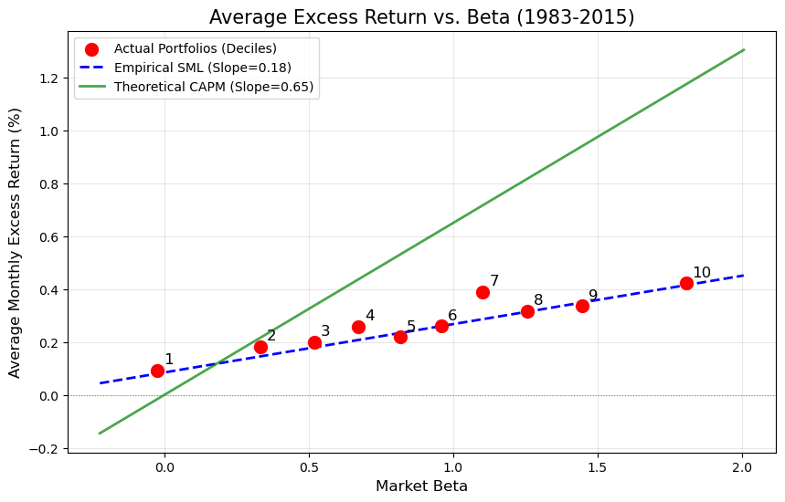

실증 분석, 석사 과제
CAPM 실증 검정
미국 주식 1980–2015 월별 수익률 약 38만 건으로, 시장 베타가 실제 수익률 차이를 설명하는지 검정
| 기간 | 2026 |
|---|---|
| 형태 | University of Glasgow 석사 과제 (Asset Pricing) |
| 기술 | Python, pandas, NumPy, statsmodels, SciPy |
| 코드 | github.com/suipizza/Empirical-CAPM-Tests |
분석 질문
- 베타가 높은 주식일수록 실제로 더 높은 수익률을 냈는지, CAPM이 미국 주식 수익률을 설명하는지 확인
방법
- 초과수익률을 계산하고 종목별 36개월 롤링 베타 추정
- 매월 베타 기준 10분위 포트폴리오를 구성해 동일가중 수익률 계산
- 포트폴리오별 시계열 회귀(Newey–West t값)와 GRS 검정으로 알파가 0인지 검정
- Fama–MacBeth 2단계 회귀로 베타와 수익률의 횡단면 관계 추정
- 1983–1999, 2000–2015로 나눠 결과가 기간에 따라 유지되는지 확인
| 베타 분위 | 알파(월, %) | t(알파) | 베타 | R² |
|---|---|---|---|---|
| 1 (최저) | 0.10 | 0.68 | 0.00 | 0.00 |
| 3 | -0.12 | -0.87 | 0.50 | 0.40 |
| 5 | -0.29 | -2.28 | 0.80 | 0.62 |
| 7 | -0.28 | -2.10 | 1.04 | 0.71 |
| 10 (최고) | -0.68 | -4.65 | 1.72 | 0.84 |
| GRS 검정 | 4.80 (p < 0.001), 알파가 모두 0이라는 가설 기각 | |||
결과
- 베타가 높은 포트폴리오일수록 알파가 낮음 (1분위 0.10% → 10분위 -0.68%, 월)
- Fama–MacBeth 기울기 0.18 (t = 1.00)로 유의하지 않아, 실제 증권시장선이 이론보다 평평함
- 두 기간 모두 저베타 이상현상이 나타났고, 2000년 이후 기울기는 0.02로 더 평평해짐

배운 점
- 이론 모형도 데이터로 검정해야 하고, 기간을 나눠 결과가 유지되는지까지 확인해야 결론을 말할 수 있음